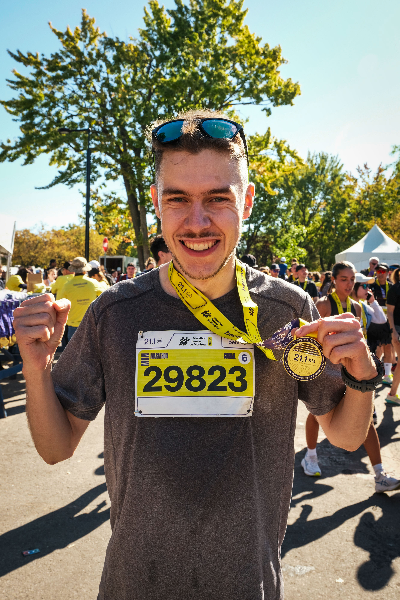
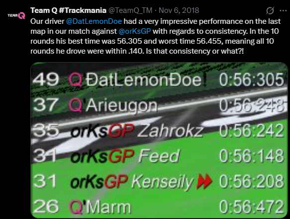
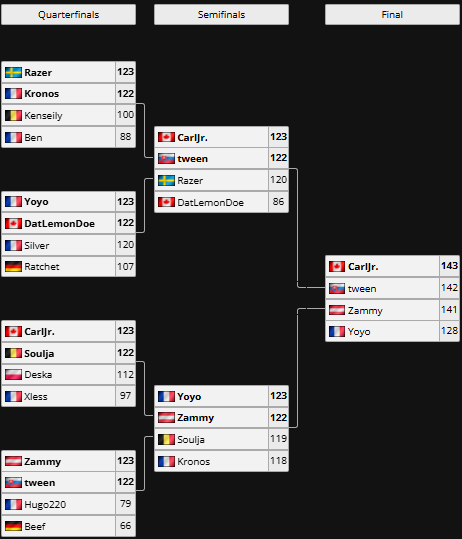
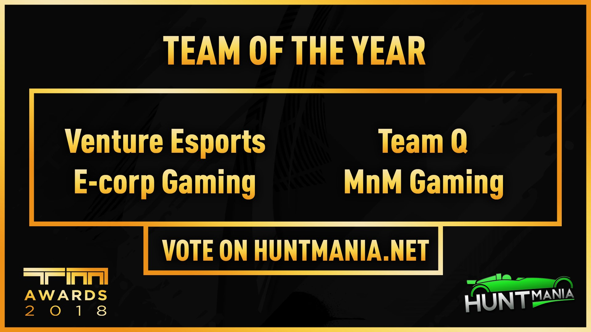

In my spare time I like play sports and other games. I'm a competitive person, so my goal is always to improve and learn from defeat!
For the past year, I've been learning to play squash. I'm a member of the University Squash Club at McGill, and I'm trying my best to rise up the ranks!
My Squash Profile on Club LockerI enjoy running and especially beating my personal bests! Here are my modest records:

Trackmania is a racing game on which I've competed for many years under the name DatLemonDoe. Below are some of my proudest moments!


